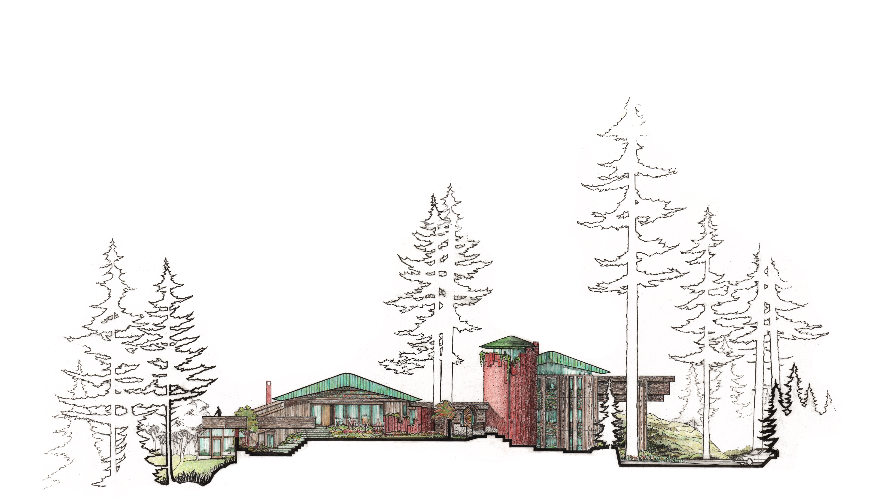

Richard Morrow Hunter,
Architect. 1930 – 2023.
Fifty years designing one house.
More

A Cottage for Ric and Frances Hunter.
Built 1970; Extended 1991; 2018.
More

The full record of the house : drawings,
photographs, and correspondence.

The Hunter House Foundation stewards the residence at 203 Goward Road and the archive of its construction, opening the record to scholars, students, and the public.
contact@hunterhouse.org
203 Goward Road · Saanich · British Columbia
203 Goward Road · Saanich · British Columbia